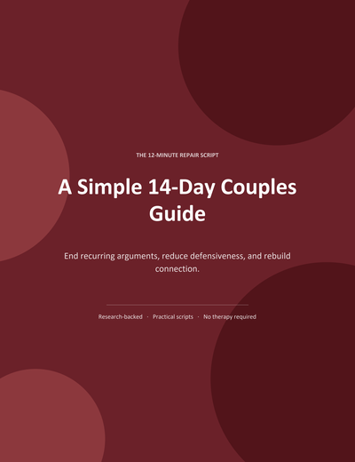
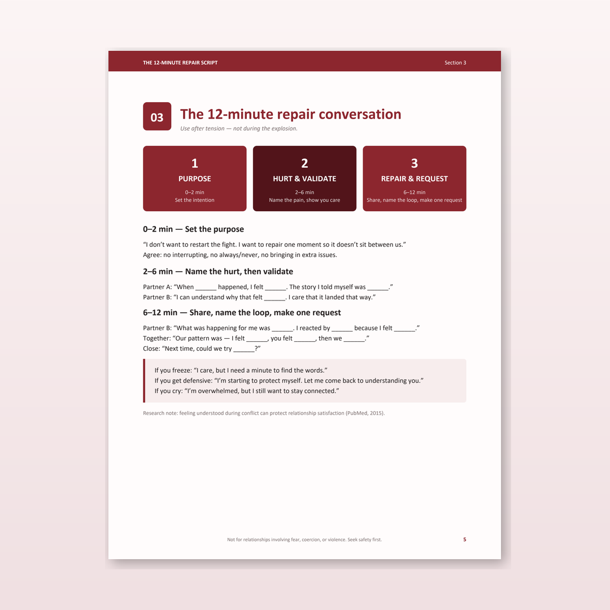
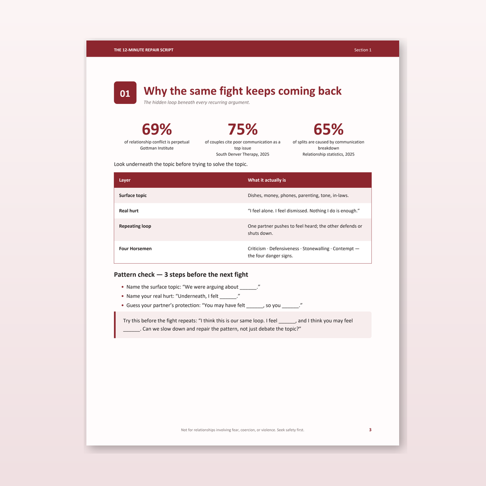
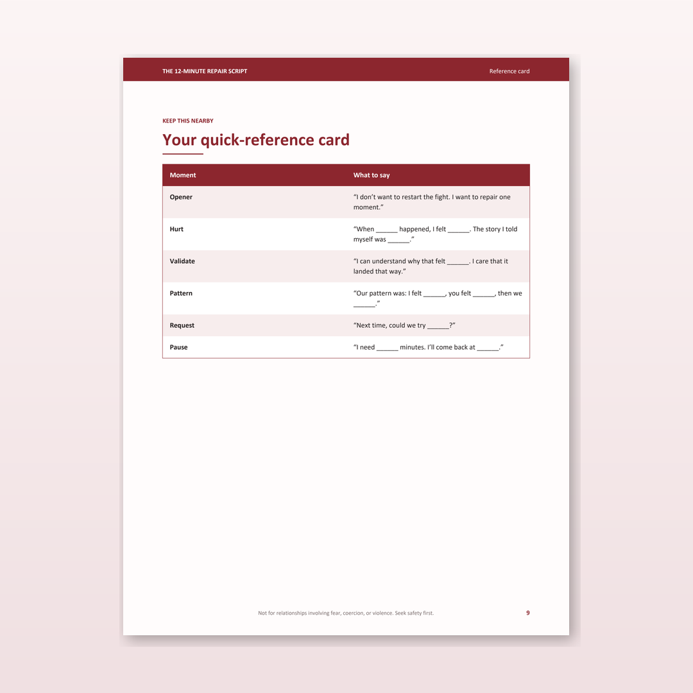

A 14-day couples guide with a literal 12-minute conversation script that interrupts recurring arguments, reduces defensiveness, and rebuilds connection — without therapy.
Get the guide — $27Instant PDF download · 11 designed pages · 60-day no-questions refund

You're fighting about the same loop underneath the dishes. The phone. The tone. The silence after.
You both want to repair. Neither of you knows how to start without making it worse. So you try a "we need to talk" — and it spirals again. Or you don't talk at all, and it sits there for three days.
This guide is a literal script for the moment you both want to come back to each other but the words won't come.

An 11-page designed PDF you can read tonight and use this week.
This guide turns peer-reviewed findings into something you can actually use tonight.
69% of relationship conflict is about perpetual problems. Couples don't need one final argument that solves everything — they need better repair around recurring issues.
A 21-minute conflict-reappraisal intervention with 120 couples preserved marital quality over time by reducing conflict-related distress (Finkel et al., 2013).
Feeling understood during conflict can protect relationship satisfaction (2015).
Three sample pages from the guide.


This guide is not for relationships involving fear, threats, coercion, violence, stalking, or control. If honesty could make you unsafe, please prioritise safety planning and professional support before any communication tools.
US Hotline: 1-800-799-7233 · thehotline.org
Get the guide. Read it tonight. Try one 12-minute conversation with your partner this week. If after 60 days you honestly feel it didn't help, we'll refund the $27 — no questions, no form.
Get the guide — $27Instant PDF · 11 pages · 60-day refund · Secure checkout via Whop
It's a script. Word-for-word phrases for each stage of the conversation, plus prompts you fill in with your own situation.
The 14-day plan is short on purpose. Most couples report a noticeably calmer conversation after the first 12-minute session — the bigger change is in how fast you both come back to each other after the next fight.
One person reading it works. Both reading it works better. The script doesn't require both partners to be "in" — one person initiating with the opener formula is enough to break the loop.
Therapy explores why you fight. This guide gives you the literal words to repair after you've fought. They're complementary, not competing. Many couples use this between therapy sessions.
60-day refund, no questions, no form. Just reply to your order email and we'll process it via Whop.
Yes. Checkout is processed by Whop, a licensed payment platform handling thousands of digital products. Your card details never touch our servers.